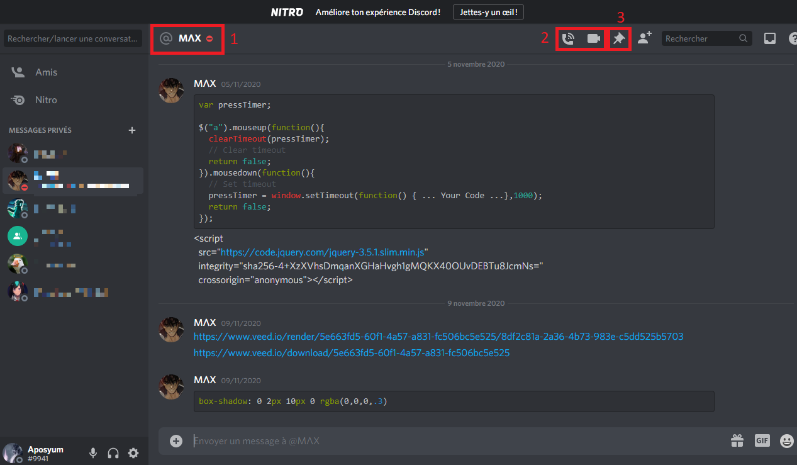

Vous trouverez sur cette page les informations relatives :
Avant de s'intéresser directement aux discussions privées, il semble important de rapidement préciser comment fonctionne l'ajout de contacts sur Discord. Il y a deux moyens d'ajouter un autre utilisateur sur cette plateforme :
Comme la majorité des logiciels de VoIP Discord propose un système de discussions privées, que ce soit avec une ou plusieurs personnes (jusqu’à 10 comptes dans un même groupe). On trouve dans ces discussions des fonctionnalités diverses, de la plus classique comme l’appel vocal à la moins commune comme le partage d’écran ou la possibilité d'épingler des messages.
Ce paramètre vous permet de préciser aux autres utilisateurs votre état de présence sur l'application lorsqu'elle est ouverte. Il dispose de 5 valeurs :
Si les fonctions d'appels audio et vidéo sont communes à tous les logiciels de VoIP et plus largement à tous les logiciels de communication, il convient de clarifier le terme de partage d'écran. Une fois un appel rejoint, qu'il soit audio ou vidéo, un bouton semblable à ceux d'extinction du micro ou de la fin d'appel apparaît, représentant un écran. Si vous cliquez dessus voici ce que vous verrez :
Il est en effet possible d'épingler les messages afin de les mettre de côté. Il est ainsi possible de retrouver tous les messages épinglés en cliquant sur la punaise en haut à droite de l'écran. Dans le cadre d'une discussion privée, cette fonctionnalité peut être utile afin de facilement retrouver des informations comme le contact professionnel de votre interlocuteur ou encore l'horaire d'un rendez-vous que vous auriez épinglé.
Sur un serveur, cette fonctionnalité permet d'avoir rapidement accès aux annonces faites par les autres utilisateurs ou encore aux règles du serveur en question. Il est toutefois important de préciser que si les messages épinglés sont accessibles à tous les utilisateurs du serveur, la fonction d'épingler un message dépend du rôle et des autorisations qui vont avec.
Les serveurs sont en grande partie responables du succès de Discord. Chaque utilisateur peut créer autant de serveurs communautaires qu'il le souhaite sur les sujets qui l'intéressent et y inviter d'autres utilisateurs via un lien. La création d'un serveur revient finalement à créer un sous-réseau à l'intérieur de Discord.
Cette décomposition de l'application en une quantité astronomique de sous réseaux permet à chacun d'y trouver son compte, et quand bien même un utilisateur ne trouverait pas de serveur sur le sujet qui l'intéresse, il peut en créer un lui-même.
Voici comment se présente un serveur :

Les rôles permettent d'une part a l'administrateur (créateur) du serveur de déléguer en partie son autorité liée à la gestion du serveur à des modérateurs mais également de différencier les membres du serveur entre eux.
En effet, lorsque l'administrateur du serveur crée un rôle, il décide également des autorisations octroyées au titulaire du rôle en question. Ces autorisations vont de la simple possibilité d'accéder à certains salons ou d'épingler des messages à celle de bannir définitivement un membre du serveur.
La précense des rôles permet aussi de différencier les membres entre eux. Dans l'exemple ci-dessus du serveur francophone Dev'Area , basé sur l'entraide entre développeurs, les rôles permettent de distinguer le niveau d'expérience de chaque utilisateur (professionnel, intermédiaire ou débutant).
Part importante des serveurs, les salons permettent d'organiser les discussion en donnant à chaque salon son thème et en définissant quels utilisateurs y ont accès. Ils sont comparables aux discussions privées mais on le net avantage d'être accessibles à tous les membres du serveur (peut dépendre du rôle des membres ) .
Il en existe deux types :
Bien que l'application dispose déjà de bien des fonctionnalités, certaines manquent et d'autres peuvent être améliorées. Les utilisateurs ont donc trouvé une solution, approuvée par l'entreprise, les Bot. Discord a donc mis à disposition des utilisateurs la possibilité de développer leurs propre Bot. Abréviation de robot, ces programmes servent à automatiser certaines tâches, faisant ainsi gagner du temps aux utilisateurs.
Quelques exemples de Bot :